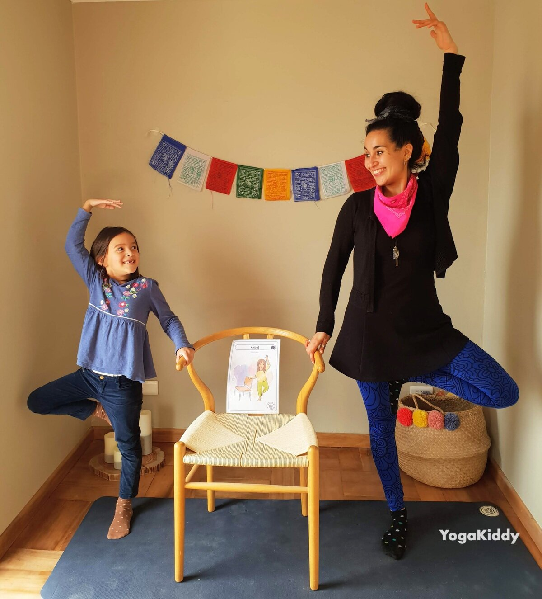

La postura del árbol, también conocida como Vrikshasana, es una postura de yoga difícil que requiere equilibrio y concentración. Puede ser difícil de dominar para los niños, pero con el enfoque adecuado, se puede hacer divertida y atractiva para ellos. Una forma de hacer que la postura del árbol sea divertida para los niños es contar historias. Incorporando historias a la práctica, los niños pueden aprender la postura al tiempo que desarrollan su imaginación y creatividad.
Beneficios de la postura del árbol
La postura del árbol es una forma estupenda de mejorar el equilibrio y la concentración de los niños. Ayuda a fortalecer las piernas, el tronco y los brazos, y puede mejorar la postura y la coordinación. Además, esta postura puede ayudar a los niños a desarrollar la confianza en sí mismos y a sentirse arraigados.
Cómo hacer divertida la postura del árbol con cuentos
Una forma de hacer que la postura del árbol sea divertida para los niños es contar historias. Al incorporar historias a la práctica, los niños pueden aprender la postura a la vez que desarrollan su imaginación y creatividad. He aquí algunos consejos para incorporar cuentos a la práctica de la postura del árbol:
Elige una historia relacionada con la postura del árbol. Por ejemplo, puedes contar una historia sobre un árbol fuerte y estable que se mantiene erguido ante una tormenta.
Utiliza accesorios para realzar la historia. Por ejemplo, puedes utilizar ramas u hojas para representar al árbol de la historia.
Anima a los niños a representar la historia mientras practican la postura del árbol. Así se engancharán a la historia y aprenderán la postura al mismo tiempo.
Haz que la historia sea interactiva. Hazles preguntas sobre la historia y anímales a añadir sus propios detalles.
Consejos para enseñar la postura del árbol a los niños
Además de incorporar historias a la práctica, existen otros consejos para enseñar la postura del árbol a los niños:
Empieza con una versión modificada de la postura. Por ejemplo, los niños pueden empezar practicando la postura con un pie en el suelo y el otro en la parte interior del muslo opuesto.
Utiliza pistas visuales para ayudar a los niños a entender la postura. Por ejemplo, puedes utilizar la imagen de un árbol para mostrarles cómo alinear el cuerpo en la postura.
Anima a los niños a concentrarse en su respiración. Respirar profunda y constantemente puede ayudar a los niños a mantener el equilibrio y la concentración en la postura.
Haz que la práctica sea divertida y lúdica. Incorpora juegos y desafíos a la práctica para mantener a los niños interesados y motivados.
La postura del árbol puede ser una postura de yoga difícil de dominar para los niños, pero con el enfoque adecuado, se puede hacer divertida y atractiva. Incorporando historias a la práctica, los niños pueden aprender la postura al tiempo que desarrollan su imaginación y creatividad. Además, el uso de versiones modificadas de la postura, las señales visuales, la concentración en la respiración y la incorporación de juegos y desafíos pueden hacer que la práctica sea divertida y entretenida para los niños.